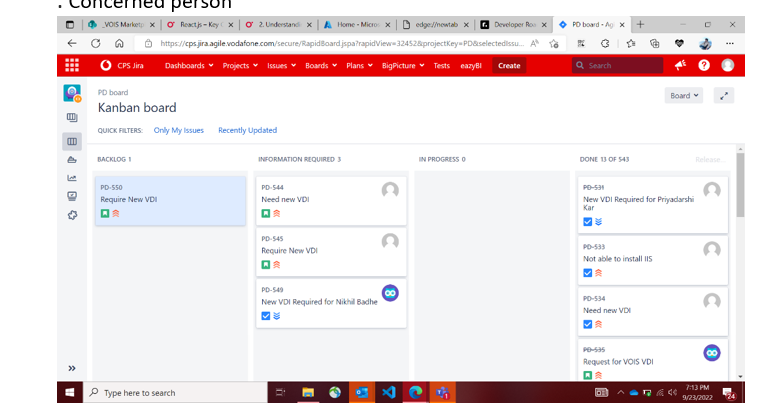
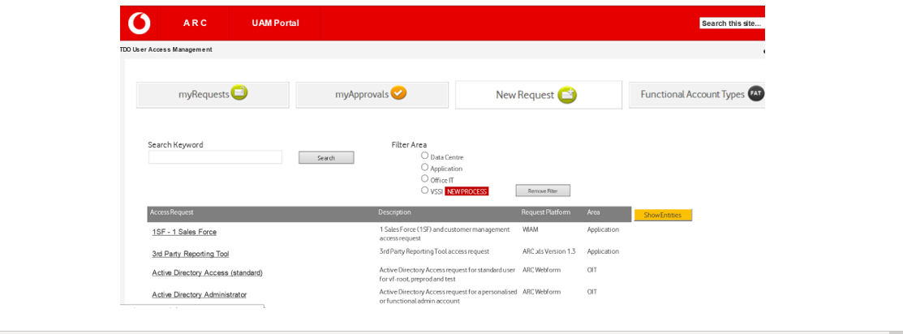
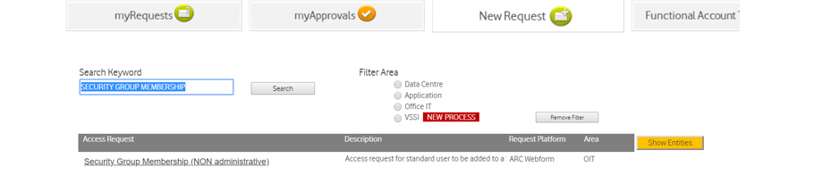
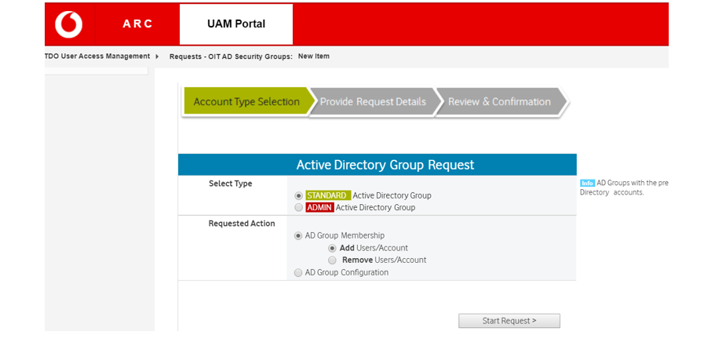
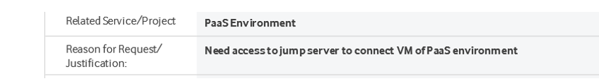

_VOIS New Joiner Document
Steps to be followed
- Request to VDI Setup.
- Get Access to Repository
- Request to Jump Server Access.
- Connect to RDP using Jump Server
- Install the required Software for Development.
- Reference IP for VDI setup
- VPN setup along with MFA (Multi Factor Authentication)
1.Request to VDI Setup.
Process for VDI creation and access –
- Request to set up a new VDI is done by raising a ticket in Jira. Jira board is accessible when access is granted.. Concerned person Tushar Singh Raghuvanshi Vodafone.
- Link to Jira board PD board - Agile Board - CPS Jira (vodafone.com)

- Someone from the PaaS Team will pick the ticket and start creating VDI for your request.
- Provide team members VDI IP for setup configuration reference, if asked.
- Track your Jira ticket for Completion of VDI process
- New joiner will receive VDI credentials in mail, after the VDI get created.
2.Request to Jump Server Access.
Process for PaaS environment jump server access –
- Open ARC tool through below link. https://collaborate.vodafone.com/sites/GO_User_Access_Management/SitePages/Home.aspx

- Search word ‘Security Group Membership’ and select

- Click on Security Group Membership (NON administrative)
- Ans select as per below:

- Start request
- Security group name : FSA-Remote_JUMP_OPENSTACK_TSS-R
- Owner details santosh.karpe@vodafone.com
- User name:type mail id of requester

- Submit the form.
- Wait the Jump Server Access request get approved. Connect with your Line Manager or Team members to get this process done asap.
3. Connect to RDP using Jump Server.
- New joiner have received Jump server pdf in the mail from PaaS team. Follow the PDF to connect with RDP. Use the credentials provided in VDI creation process
- Never shut down the PDP, always disconnect or restart it.
4. Get access to the repository.
- Check for the access into the repository. If access is not provided, connect with your team and ask to add you into the group.
- Once access is provided, Clone the repository in your RDP.
5. Install the required Software for Development.
- Install the required softwares in the RDP.
- All development should be done inside the RDP.
8. VPN setup along with MFA (Multi Factor Authentication)